Algorithms and Data Strucutures
Udemy
I delved into the fundamental principles governing efficient problem-solving in computer science. Through rigorous study and practical applications, I mastered algorithmic design strategies and honed my skills in implementing data structures, equipping me with the essential tools to tackle complex computational challenges. This course has been instrumental in enhancing my ability to create optimized and scalable solutions for a wide range of problems.

Applied Machine Learning Foundations
LinkedIn Learning
"Applied Machine Learning Foundations," I gained a solid understanding of the theoretical underpinnings and practical considerations essential for deploying machine learning models effectively. These courses collectively equipped me with the expertise to navigate and succeed in the dynamic field of applied machine learning.
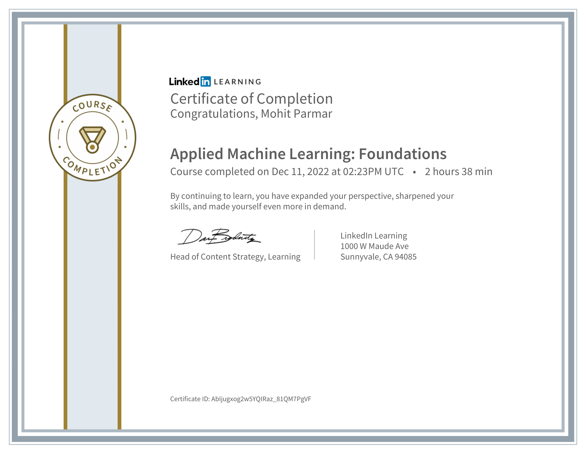Applied Machine Learning Algorithm
LinkedIn Learning
"Applied Machine Learning Algorithms" provided a comprehensive exploration of advanced machine learning techniques, enabling me to implement cutting-edge algorithms for real-world applications.
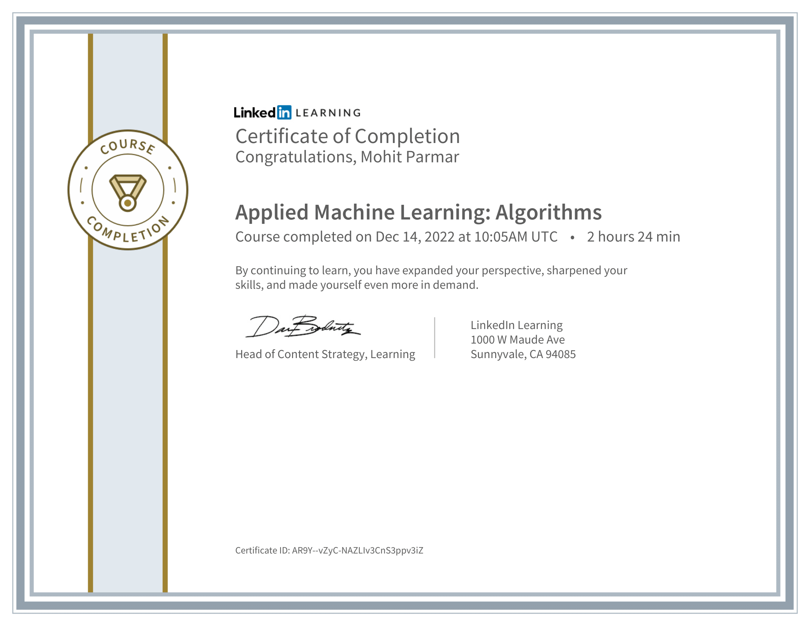Artificial Intelligence Foundation Neural Networks
LinkedIn Learning
The "Artificial Intelligence Foundation: Neural Networks" course was a comprehensive exploration of the fundamental principles underlying neural networks, a cornerstone of artificial intelligence. Through in-depth modules, I gained a solid understanding of neural network architectures, learning algorithms, and their applications.
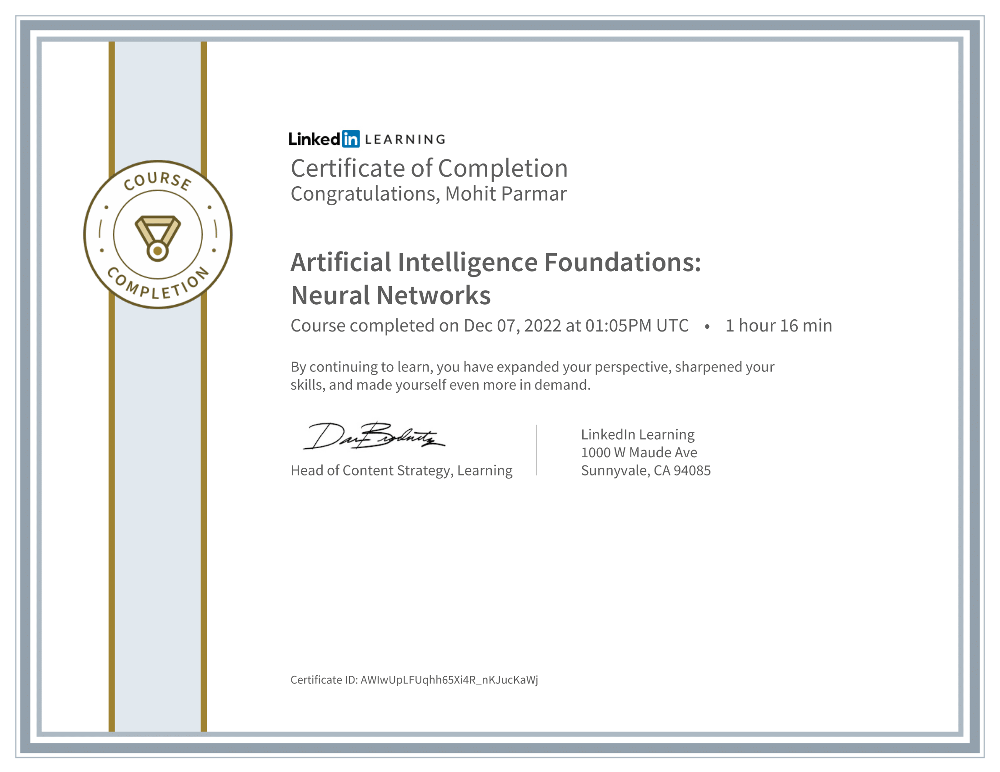Chief Technology Officer Career Guide
LinkedIn Learning
This course was an invaluable resource, offering strategic insights into the multifaceted role of a CTO. Through in-depth modules, I acquired the necessary leadership skills, technological foresight, and business acumen required to excel in this pivotal position.
Ethical Hacking Introduction
LinkedIn Learning
This course provided a foundational understanding of cybersecurity, equipping me with ethical hacking techniques to identify and rectify vulnerabilities in digital systems.
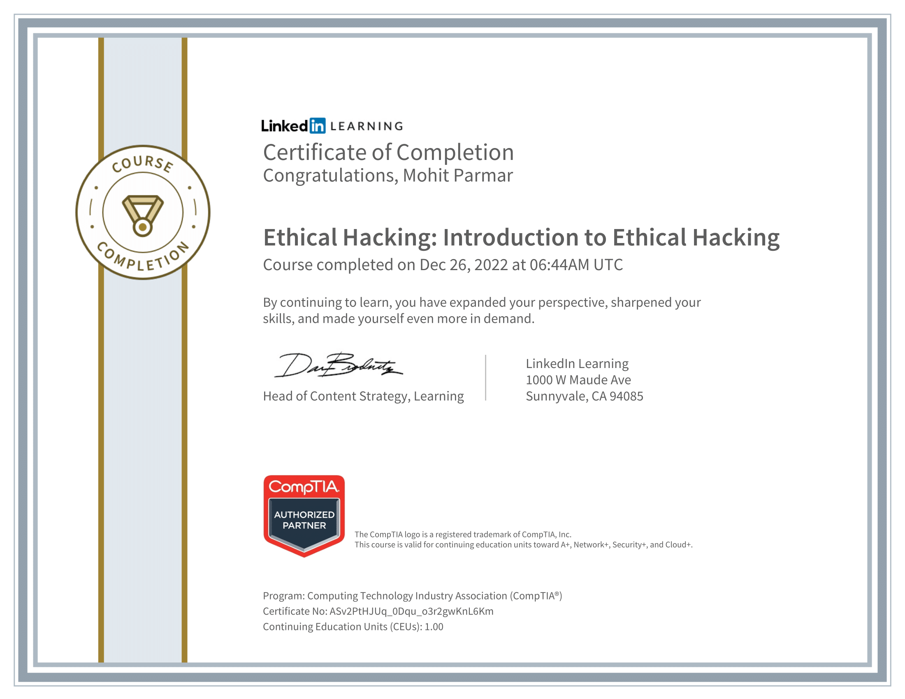Data Science Foundation Fundamentals
LinkedIn Learning
"Data Science Foundation Fundamentals" immersed me in the core principles of data science, covering key concepts such as statistical analysis, machine learning, and data visualization. This course equipped me with the essential skills to extract meaningful insights from complex datasets, laying a solid groundwork for advanced analytics.
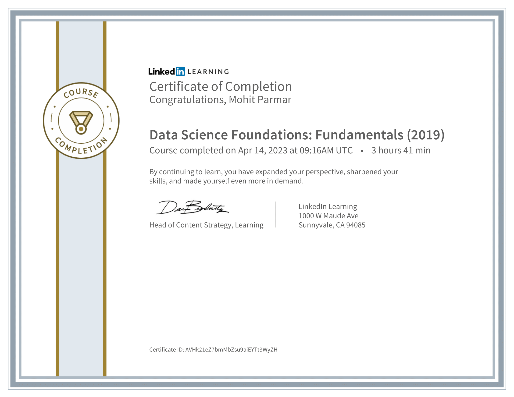Getting Started with AI and Machine Learning
LinkedIn Learning
Course provided a concise yet comprehensive introduction to the fundamentals of artificial intelligence and machine learning. Through practical examples and hands-on exercises, I gained a solid foundation in designing and implementing basic AI and ML models. This course served as an excellent entry point, demystifying complex concepts and inspiring confidence for further exploration in the dynamic field of AI and machine learning.
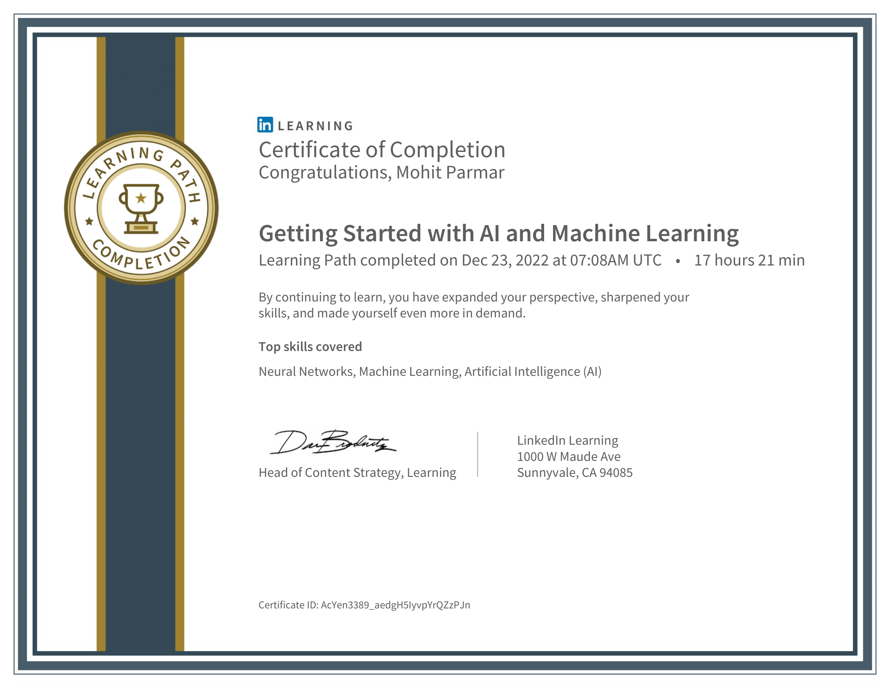Learning Explainable Artificial Intelligence
LinkedIn Learning
This course deepened my understanding of developing AI models with transparency and interpretability. I explored techniques to make complex machine learning models more understandable, ensuring their outputs are accessible and comprehensible.
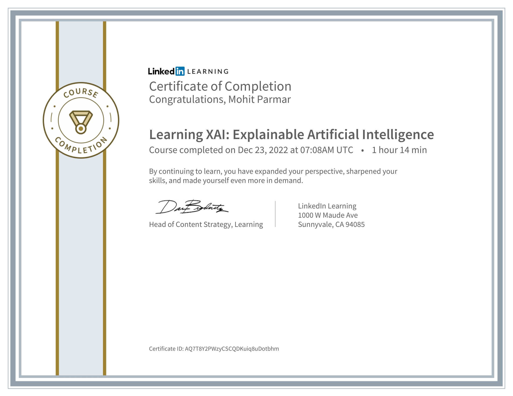Machine Learning with Python Foundations
LinkedIn Learning
"Machine Learning with Python Foundations" offered a solid grounding in the principles and practical applications of machine learning using the Python programming language. Through hands-on projects and comprehensive modules, I gained proficiency in implementing and understanding various machine learning algorithms. This course served as a crucial entry point, providing a robust foundation for leveraging Python's capabilities in the exciting and dynamic field of machine learning.
NLP with Python for Machine Learning
LinkedIn Learning
immersed me in the fascinating realm of Natural Language Processing, where I acquired the skills to process and analyze human language using Python. The course delved into techniques like text preprocessing, spanm-filteringing, empowering me to apply machine learning to language-related tasks. Through practical exercises, I developed the expertise to harness the power of Python for NLP, opening doors to diverse applications in the field of artificial intelligence.
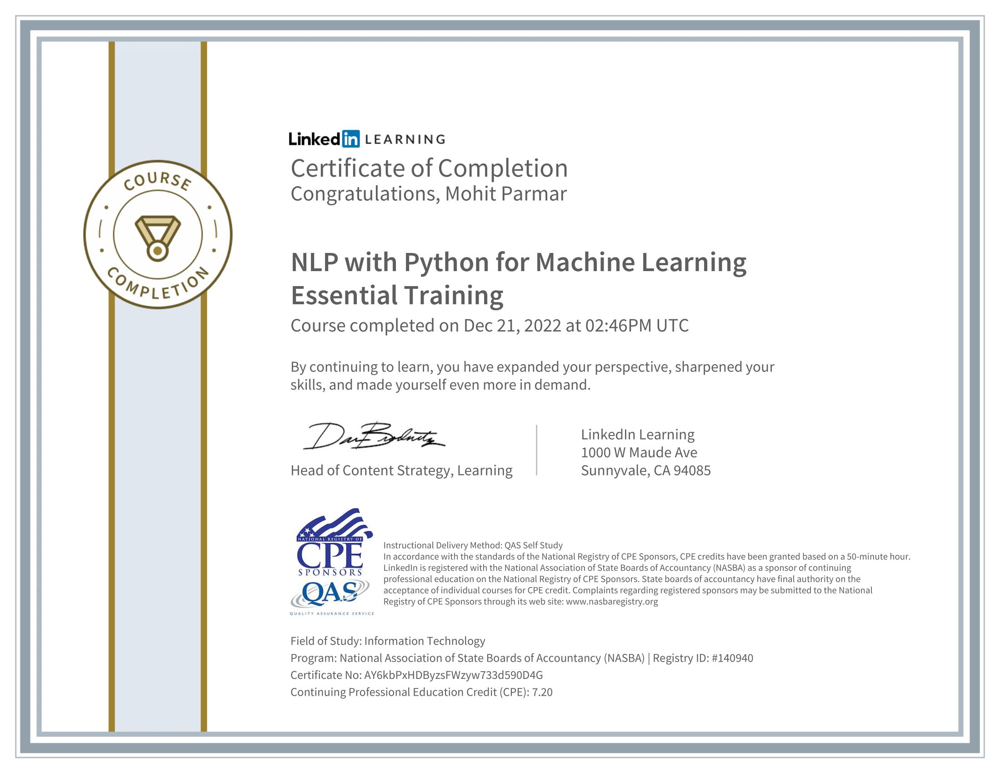Computer Networking
Udemy
The "Computer Networking" course provided a comprehensive exploration of the foundational principles and technologies that underpin modern computer networks. Covering topics such as protocols, network architecture, and security, the course equipped me with a deep understanding of how data communication functions in both local and global contexts.

Introduction to Machine Learning
Kaggle
The "Introduction to Machine Learning" course served as an invaluable foundation in understanding the principles and applications of this dynamic field. Covering fundamental concepts like supervised and unsupervised learning, model training, and evaluation, the course provided a comprehensive overview of machine learning workflows.
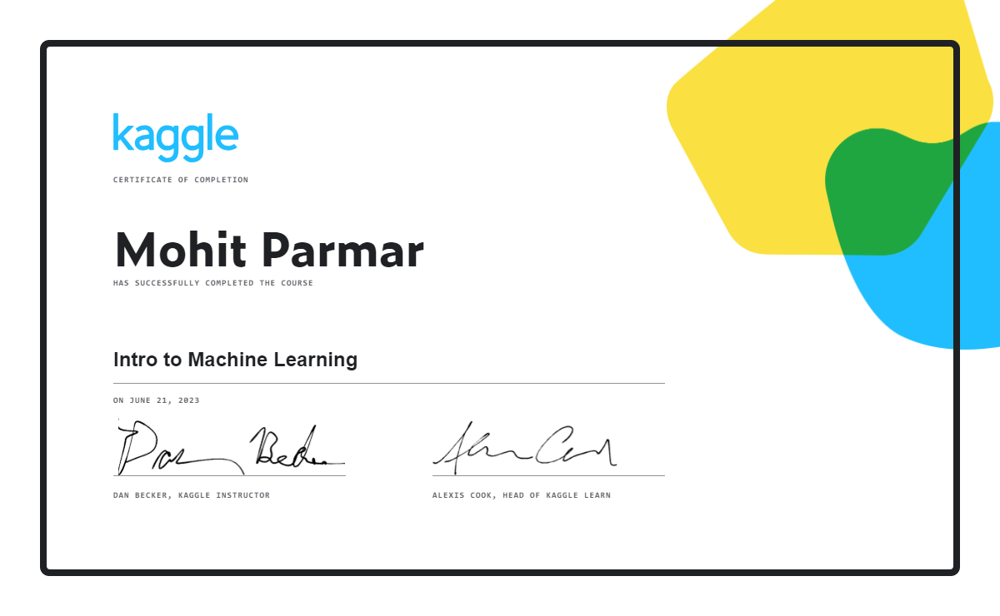Intermediate Machine Learning
Kaggle
The "Intermediate Machine Learning" course delved into the intricacies of machine learning, bridging the gap between fundamental concepts and advanced techniques. Covering topics such as ensemble methods, hyperparameter tuning, and model evaluation, the course provided a nuanced understanding of building high-performing models.
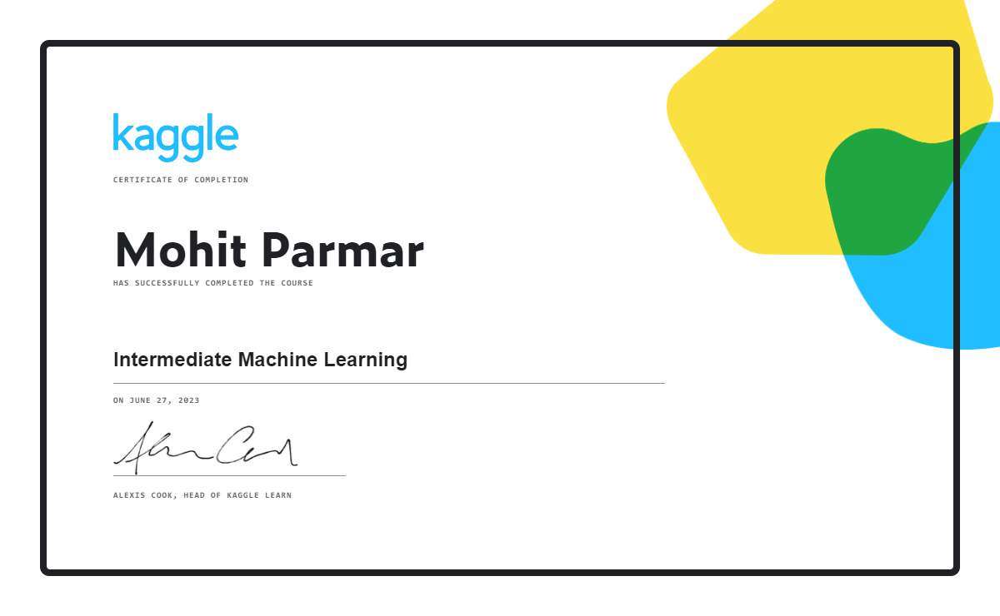Data Cleaning
Kaggle
The "Data Cleaning" course provided a meticulous exploration of techniques and best practices essential for ensuring the integrity and quality of datasets. Covering methodologies for handling missing values, outliers, and inconsistencies, the course equipped me with the skills to preprocess and clean data effectively.
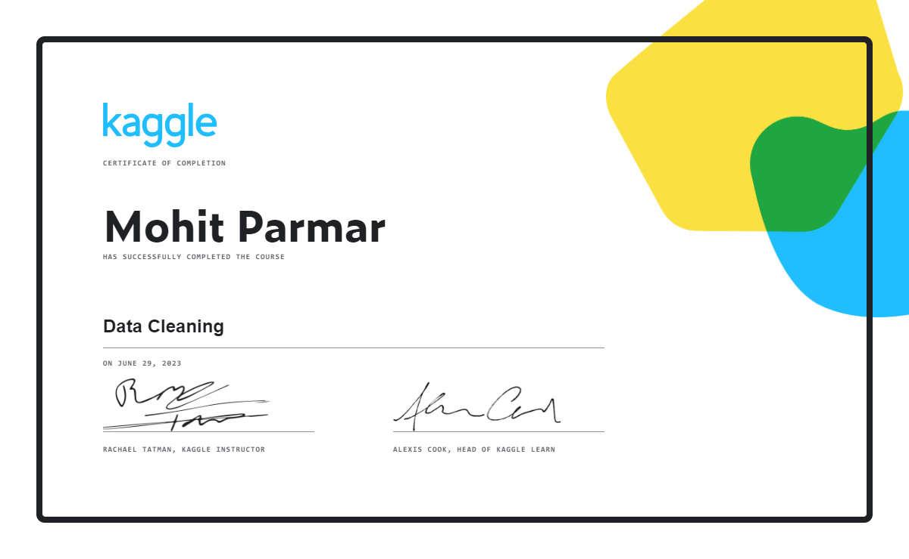Feature Engineering
Kaggle
"Feature Engineering" delved into the critical aspect of enhancing machine learning models by crafting informative and relevant features from raw data. The course equipped me with advanced techniques to preprocess and transform data, optimizing its representation for improved model performance. Through hands-on exercises, I developed the skills to identify and engineer meaningful features, crucial for building more accurate and effective machine learning models across diverse applications.
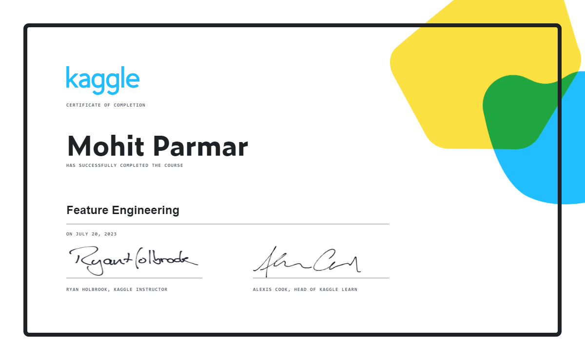